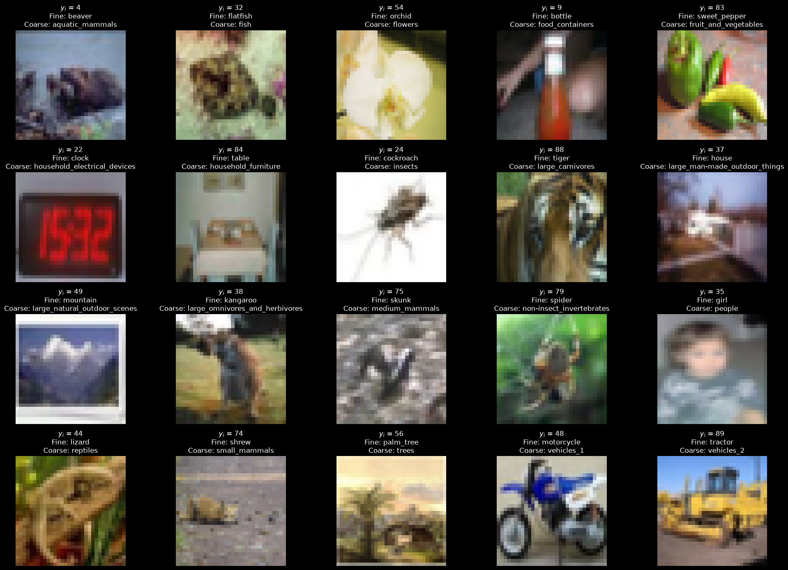
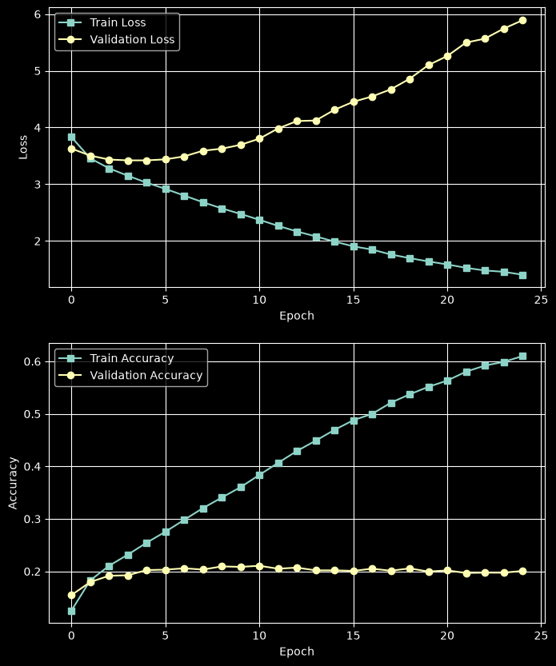
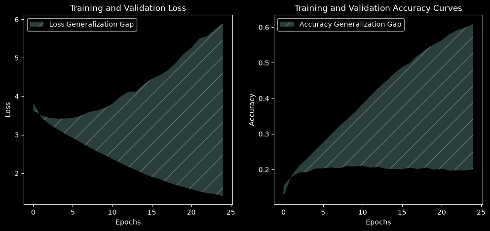
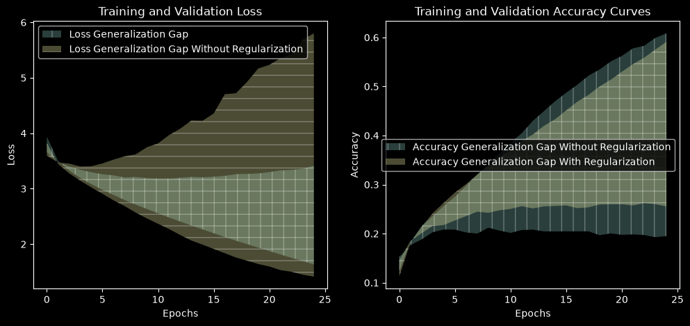
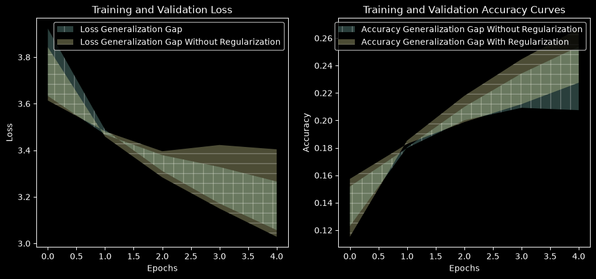
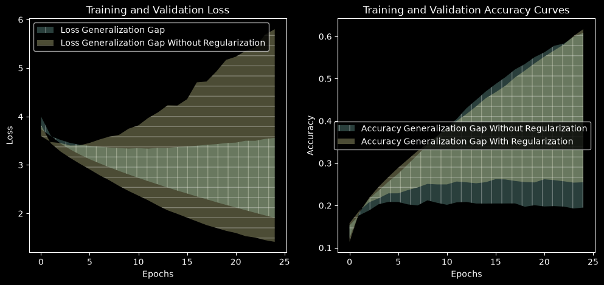
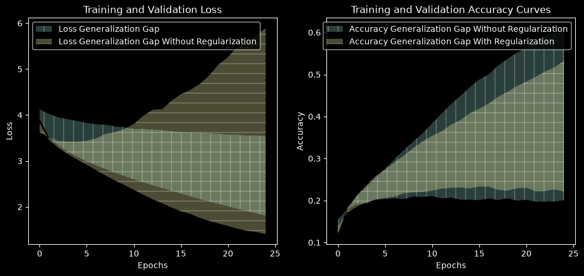
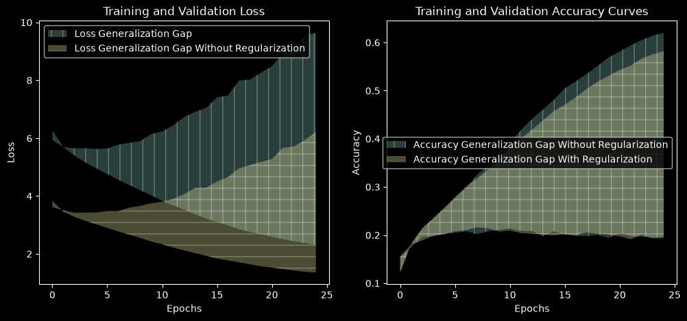

!pip install datasetszsh:1: command not found: pip 

In this part of the project, you will focus on understanding and mitigating overfitting in deep learning models. Your goal is to demonstrate a significant improvement over a baseline and explain which methods contributed to it.
Apply each technique separately to a fresh model, keeping other settings fixed unless a change is required. Reuse the same training, validation, and test subsets throughout.
Use validation results to choose settings and stopping points. After those choices are finalized, evaluate the selected model on clean training and test images in evaluation mode.
For every technique, report:
Training loss, test loss, and loss gap = test loss − training loss.
Training accuracy, test accuracy, and accuracy gap = training accuracy − test accuracy.
Use ordinary cross-entropy on fine-class labels for evaluation, without label smoothing, regularization penalties, or auxiliary-task losses.
Compare both gaps with the baseline. Explain whether a smaller gap comes from improved test performance, reduced training performance, or both.
CIFAR-100 contains 60,000 color images, each 32 × 32 pixels, organized into 100 fine-grained classes and 20 broader categories.
\[\begin{aligned} \mathbf{x}_i \in & \mathbb{R}^{32 \times 32 \times 3} \\ \mathbf{X} \in & \mathbb{R}^{60,000 \times 3072} \\ \mathbf{y}_{fine} \in & \{1, \dots, 100\} \\ \mathbf{y}_{coarse} \in & \{1, \dots, 20\} \\ \end{aligned}\]
The dataset comes with predefined training and test splits of 50,000 and 10,000 images, respectively.
You are expected to randomly split the official training set into training and validation subsets of 40,000 and 10,000 images, respectively.
This train-validation split must be stratified, ensuring that each class is proportionally represented in both the training and validation subsets.
Your primary task is 100-class image classification. For multi-task learning, also predict each image’s 20-class coarse category.
Dataset and category information: CIFAR-100.
!pip install datasetszsh:1: command not found: pip%pip install --upgrade Pillow/Users/andrewodell/Desktop/Machine Learning with Big Data/Code/.venv/bin/python: No module named pip
Note: you may need to restart the kernel to use updated packages.from datasets import load_dataset
ds = load_dataset("uoft-cs/cifar100") # train / test splits
# fields: img, fine_label, coarse_label/Users/andrewodell/Desktop/Machine Learning with Big Data/Code/.venv/lib/python3.14/site-packages/tqdm/auto.py:21: TqdmWarning: IProgress not found. Please update jupyter and ipywidgets. See https://ipywidgets.readthedocs.io/en/stable/user_install.html
from .autonotebook import tqdm as notebook_tqdm
Warning: You are sending unauthenticated requests to the HF Hub. Please set a HF_TOKEN to enable higher rate limits and faster downloads.dsDatasetDict({
train: Dataset({
features: ['img', 'fine_label', 'coarse_label'],
num_rows: 50000
})
test: Dataset({
features: ['img', 'fine_label', 'coarse_label'],
num_rows: 10000
})
})import numpy as np
from matplotlib import pyplot as plt
# Split complete rows so images and both labels stay aligned.
# Run this from the original ds, replacing your existing split code.
split = ds["train"].train_test_split(
test_size=10_000,
seed=42,
stratify_by_column="fine_label"
)
train_ds = split["train"]
valid_ds = split["test"]
test_ds = ds["test"]
fine_names = train_ds.features["fine_label"]
coarse_names = train_ds.features["coarse_label"]
# Retrieve labels without loading every image.
y_train = np.array(train_ds["fine_label"])
coarse_train = np.array(train_ds["coarse_label"])
plt.style.use("dark_background")
fig, axes = plt.subplots(4, 5, figsize=(20, 14))
for label in range(20):
i = np.flatnonzero(coarse_train == label)[0]
example = train_ds[int(i)]
ax = axes.flat[label]
ax.imshow(example["img"])
ax.set_title(
f"$y_i$ = {example['fine_label']}\n"
f"Fine: {fine_names.int2str(example['fine_label'])}\n"
f"Coarse: {coarse_names.int2str(example['coarse_label'])}"
)
ax.axis("off")
plt.tight_layout()
plt.show()
print(
f"Train: {len(train_ds)}, "
f"Validation: {len(valid_ds)}, "
f"Test: {len(test_ds)}"
)
Train: 40000, Validation: 10000, Test: 10000Build a sequential feed-forward neural network model and train it from random initialization using cross-entropy loss.
For the baseline:
Choose the optimizer, learning-rate schedule, batch size, and epoch budget before the main experiments. Keep them fixed unless a method requires a documented change.
Note that transforms.Compose combines image transformations into a sequence and applies them in the order listed whenever an image is loaded. In this notebook, it converts images into PyTorch tensors using ToTensor() and normalizes each color channel using Normalize(). For data augmentation, we add transformations such as random crops and horizontal flips before ToTensor(). These random transformations can produce a different version of an image each time it is loaded during training. For validation and testing, we use only conversion and normalization so that evaluation images are not randomly altered.
Report parameter count, training time, training accuracy, validation accuracy, and the generalization gap:
import numpy as np
import torch
import torch.nn as nn
from PIL import Image
from torch.utils.data import Dataset, DataLoader
from torchvision import transforms
images = ds["train"]["img"]
labels = ds["train"]["fine_label"]
# Reuse the existing stratified split.
X_train = train_ds["img"]
y_train = train_ds["fine_label"]
X_valid = valid_ds["img"]
y_valid = valid_ds["fine_label"]
X_test = test_ds["img"]
y_test = test_ds["fine_label"]
class MyDataset(Dataset):
def __init__(self, X, y):
self.features = X
self.labels = y
self.transform = transforms.Compose([
transforms.ToTensor(),
transforms.Normalize(
(0.5071, 0.4867, 0.4408),
(0.2675, 0.2565, 0.2761)
),
])
def __getitem__(self, index):
image = self.features[index]
# Handles PIL images or original uint8 image arrays.
if not isinstance(image, Image.Image):
image = Image.fromarray(np.asarray(image))
image = self.transform(image.convert("RGB"))
label = torch.tensor(int(self.labels[index]), dtype=torch.long)
return image, label
def __len__(self):
return len(self.features)
train_dataset = MyDataset(X_train, y_train)
val_dataset = MyDataset(X_valid, y_valid)
train_loader = DataLoader(
train_dataset, batch_size=64, shuffle=True
)
val_loader = DataLoader(
val_dataset, batch_size=64, shuffle=False
)
if torch.cuda.is_available():
device = torch.device("cuda")
elif torch.backends.mps.is_available():
device = torch.device("mps")
else:
device = torch.device("cpu")
model = nn.Sequential(
nn.Flatten(),
nn.Linear(32 * 32 * 3, 512),
nn.ReLU(),
nn.Linear(512, 256),
nn.ReLU(),
nn.Linear(256, 100),
).to(device)
optimizer = torch.optim.Adam(model.parameters(), lr=1e-3)
criterion = nn.CrossEntropyLoss()
num_epochs = 25
train_loss_history = []
val_loss_history = []
train_accuracy_history = []
val_accuracy_history = []
for epoch in range(num_epochs):
model.train()
train_loss_sum = 0.0
train_correct = 0
train_count = 0
for inputs, targets in train_loader:
inputs = inputs.to(device)
targets = targets.to(device)
optimizer.zero_grad()
outputs = model(inputs)
loss = criterion(outputs, targets)
loss.backward()
optimizer.step()
batch_size = targets.size(0)
train_loss_sum += loss.item() * batch_size
train_correct += (outputs.argmax(dim=1) == targets).sum().item()
train_count += batch_size
model.eval()
val_loss_sum = 0.0
val_correct = 0
val_count = 0
with torch.no_grad():
for inputs, targets in val_loader:
inputs = inputs.to(device)
targets = targets.to(device)
outputs = model(inputs)
loss = criterion(outputs, targets)
batch_size = targets.size(0)
val_loss_sum += loss.item() * batch_size
val_correct += (outputs.argmax(dim=1) == targets).sum().item()
val_count += batch_size
train_loss_history.append(train_loss_sum / train_count)
val_loss_history.append(val_loss_sum / val_count)
print(
f"Epoch {epoch + 1}/{num_epochs} | "
f"Train loss: {train_loss_sum / train_count:.4f} | "
f"Train accuracy: {train_correct / train_count:.2%} | "
f"Val loss: {val_loss_sum / val_count:.4f} | "
f"Val accuracy: {val_correct / val_count:.2%}"
)
train_accuracy_history.append(train_correct / train_count)
val_accuracy_history.append(val_correct / val_count)Epoch 1/25 | Train loss: 3.8383 | Train accuracy: 12.26% | Val loss: 3.6168 | Val accuracy: 15.49%
Epoch 2/25 | Train loss: 3.4599 | Train accuracy: 18.20% | Val loss: 3.5040 | Val accuracy: 17.42%
Epoch 3/25 | Train loss: 3.2826 | Train accuracy: 21.24% | Val loss: 3.4259 | Val accuracy: 19.67%
Epoch 4/25 | Train loss: 3.1423 | Train accuracy: 23.48% | Val loss: 3.4275 | Val accuracy: 19.70%
Epoch 5/25 | Train loss: 3.0232 | Train accuracy: 25.44% | Val loss: 3.4364 | Val accuracy: 20.26%
Epoch 6/25 | Train loss: 2.8978 | Train accuracy: 27.91% | Val loss: 3.4761 | Val accuracy: 20.47%
Epoch 7/25 | Train loss: 2.7795 | Train accuracy: 29.79% | Val loss: 3.4745 | Val accuracy: 20.81%
Epoch 8/25 | Train loss: 2.6652 | Train accuracy: 32.54% | Val loss: 3.5992 | Val accuracy: 20.19%
Epoch 9/25 | Train loss: 2.5556 | Train accuracy: 34.44% | Val loss: 3.6604 | Val accuracy: 20.81%
Epoch 10/25 | Train loss: 2.4283 | Train accuracy: 37.31% | Val loss: 3.7496 | Val accuracy: 21.11%
Epoch 11/25 | Train loss: 2.3321 | Train accuracy: 39.16% | Val loss: 3.8036 | Val accuracy: 21.42%
Epoch 12/25 | Train loss: 2.2203 | Train accuracy: 41.84% | Val loss: 3.9003 | Val accuracy: 20.87%
Epoch 13/25 | Train loss: 2.1227 | Train accuracy: 44.09% | Val loss: 4.0631 | Val accuracy: 20.87%
Epoch 14/25 | Train loss: 2.0289 | Train accuracy: 46.10% | Val loss: 4.2799 | Val accuracy: 19.81%
Epoch 15/25 | Train loss: 1.9368 | Train accuracy: 48.09% | Val loss: 4.2887 | Val accuracy: 20.79%
Epoch 16/25 | Train loss: 1.8391 | Train accuracy: 50.49% | Val loss: 4.4984 | Val accuracy: 20.07%
Epoch 17/25 | Train loss: 1.7779 | Train accuracy: 51.93% | Val loss: 4.6594 | Val accuracy: 19.85%
Epoch 18/25 | Train loss: 1.7116 | Train accuracy: 53.47% | Val loss: 4.9557 | Val accuracy: 19.80%
Epoch 19/25 | Train loss: 1.6433 | Train accuracy: 55.20% | Val loss: 5.0689 | Val accuracy: 20.04%
Epoch 20/25 | Train loss: 1.5718 | Train accuracy: 56.93% | Val loss: 5.1836 | Val accuracy: 19.44%
Epoch 21/25 | Train loss: 1.5288 | Train accuracy: 58.14% | Val loss: 5.2754 | Val accuracy: 20.41%
Epoch 22/25 | Train loss: 1.4747 | Train accuracy: 59.40% | Val loss: 5.6663 | Val accuracy: 19.81%
Epoch 23/25 | Train loss: 1.4268 | Train accuracy: 60.55% | Val loss: 5.7121 | Val accuracy: 19.64%
Epoch 24/25 | Train loss: 1.3819 | Train accuracy: 61.43% | Val loss: 5.9343 | Val accuracy: 19.53%
Epoch 25/25 | Train loss: 1.3622 | Train accuracy: 62.00% | Val loss: 6.2213 | Val accuracy: 19.65%fig, axs = plt.subplots(2, 1, figsize=(8, 10))
axs[0].plot(train_loss_history, label="Train Loss", marker='s')
axs[0].plot(val_loss_history, label="Validation Loss", marker='o')
axs[0].set_xlabel("Epoch")
axs[0].set_ylabel("Loss")
axs[0].legend()
axs[0].grid(True)
axs[1].plot(train_accuracy_history, label="Train Accuracy", marker='s')
axs[1].plot(val_accuracy_history, label="Validation Accuracy", marker='o')
axs[1].set_xlabel("Epoch")
axs[1].set_ylabel("Accuracy")
axs[1].legend()
axs[1].grid(True)
plt.show()
Generalization gap = training accuracy − validation accuracy.
If the model does not overfit, explain what you observe. Do not deliberately weaken the baseline to make later improvements look larger.
fig, axs = plt.subplots(1, 2, figsize=(12, 5))
axs[0].fill_between(range(len(train_loss_history)), val_loss_history, train_loss_history, alpha=0.3, label='Loss Generalization Gap', hatch='/')
axs[0].legend()
axs[0].set_xlabel('Epochs')
axs[0].set_ylabel('Loss')
axs[0].set_title('Training and Validation Loss')
axs[1].fill_between(range(len(train_accuracy_history)), train_accuracy_history, val_accuracy_history, alpha=0.3, label='Accuracy Generalization Gap', hatch='/')
axs[1].legend()
axs[1].set_xlabel('Epochs')
axs[1].set_ylabel('Accuracy')
axs[1].set_title('Training and Validation Accuracy Curves')
plt.show()
X_testColumn([<PIL.PngImagePlugin.PngImageFile image mode=RGB size=32x32 at 0x127D84B90>, <PIL.PngImagePlugin.PngImageFile image mode=RGB size=32x32 at 0x127D84CD0>, <PIL.PngImagePlugin.PngImageFile image mode=RGB size=32x32 at 0x127D84E10>, <PIL.PngImagePlugin.PngImageFile image mode=RGB size=32x32 at 0x127D84F50>, <PIL.PngImagePlugin.PngImageFile image mode=RGB size=32x32 at 0x127D85090>, ...])from sklearn.metrics import classification_report
from torch.utils.data import DataLoader
import torch
test_dataset = MyDataset(X_test, y_test)
test_loader = DataLoader(
test_dataset, batch_size=64, shuffle=False
)
model.eval()
y_true = []
y_pred = []
with torch.no_grad():
for inputs, targets in test_loader:
outputs = model(inputs.to(device))
predictions = outputs.argmax(dim=1)
y_true.extend(targets.cpu().tolist())
y_pred.extend(predictions.cpu().tolist())
class_names = ds["train"].features["fine_label"].names
print(classification_report(
y_true,
y_pred,
labels=list(range(100)),
target_names=class_names,
digits=3,
zero_division=0,
)) precision recall f1-score support
apple 0.447 0.340 0.386 100
aquarium_fish 0.130 0.360 0.191 100
baby 0.075 0.110 0.089 100
bear 0.134 0.160 0.146 100
beaver 0.097 0.030 0.046 100
bed 0.135 0.290 0.184 100
bee 0.094 0.080 0.086 100
beetle 0.100 0.040 0.057 100
bicycle 0.239 0.110 0.151 100
bottle 0.293 0.220 0.251 100
bowl 0.000 0.000 0.000 100
boy 0.020 0.010 0.013 100
bridge 0.145 0.080 0.103 100
bus 0.194 0.120 0.148 100
butterfly 0.217 0.050 0.081 100
camel 0.096 0.090 0.093 100
can 0.194 0.180 0.187 100
castle 0.217 0.340 0.265 100
caterpillar 0.162 0.220 0.186 100
cattle 0.200 0.010 0.019 100
chair 0.317 0.190 0.237 100
chimpanzee 0.256 0.330 0.288 100
clock 0.172 0.170 0.171 100
cloud 0.204 0.210 0.207 100
cockroach 0.233 0.140 0.175 100
couch 0.059 0.010 0.017 100
cra 0.000 0.000 0.000 100
crocodile 0.099 0.100 0.100 100
cup 0.208 0.330 0.255 100
dinosaur 0.143 0.050 0.074 100
dolphin 0.205 0.150 0.173 100
elephant 0.072 0.130 0.093 100
flatfish 0.238 0.100 0.141 100
forest 0.092 0.250 0.135 100
fox 0.143 0.010 0.019 100
girl 0.097 0.140 0.115 100
hamster 0.153 0.110 0.128 100
house 0.111 0.030 0.047 100
kangaroo 0.067 0.010 0.017 100
keyboard 0.056 0.070 0.062 100
lamp 0.107 0.030 0.047 100
lawn_mower 0.512 0.410 0.456 100
leopard 0.053 0.040 0.045 100
lion 0.099 0.320 0.151 100
lizard 0.000 0.000 0.000 100
lobster 0.071 0.020 0.031 100
man 0.154 0.080 0.105 100
maple_tree 0.264 0.340 0.297 100
motorcycle 0.140 0.330 0.197 100
mountain 0.246 0.160 0.194 100
mouse 0.038 0.040 0.039 100
mushroom 0.043 0.010 0.016 100
oak_tree 0.478 0.550 0.512 100
orange 0.247 0.630 0.355 100
orchid 0.202 0.230 0.215 100
otter 0.000 0.000 0.000 100
palm_tree 0.250 0.220 0.234 100
pear 0.158 0.160 0.159 100
pickup_truck 0.103 0.190 0.133 100
pine_tree 0.147 0.050 0.075 100
plain 0.361 0.530 0.429 100
plate 0.238 0.240 0.239 100
poppy 0.255 0.250 0.253 100
porcupine 0.184 0.070 0.101 100
possum 0.176 0.030 0.051 100
rabbit 0.059 0.010 0.017 100
raccoon 0.019 0.030 0.024 100
ray 0.158 0.120 0.136 100
road 0.321 0.420 0.364 100
rocket 0.174 0.240 0.202 100
rose 0.306 0.150 0.201 100
sea 0.118 0.630 0.199 100
seal 0.000 0.000 0.000 100
shark 0.108 0.290 0.157 100
shrew 0.069 0.110 0.085 100
skunk 0.153 0.230 0.184 100
skyscraper 0.203 0.260 0.228 100
snail 0.118 0.020 0.034 100
snake 0.000 0.000 0.000 100
spider 0.033 0.010 0.015 100
squirrel 0.333 0.020 0.038 100
streetcar 0.068 0.050 0.057 100
sunflower 0.337 0.590 0.429 100
sweet_pepper 0.083 0.120 0.098 100
table 0.047 0.040 0.043 100
tank 0.140 0.360 0.201 100
telephone 0.127 0.280 0.175 100
television 0.115 0.150 0.130 100
tiger 0.039 0.030 0.034 100
tractor 0.270 0.170 0.209 100
train 0.171 0.060 0.089 100
trout 0.282 0.200 0.234 100
tulip 0.227 0.050 0.082 100
turtle 0.118 0.040 0.060 100
wardrobe 0.241 0.340 0.282 100
whale 0.170 0.310 0.220 100
willow_tree 0.188 0.090 0.122 100
wolf 0.069 0.060 0.064 100
woman 0.079 0.030 0.043 100
worm 0.110 0.250 0.153 100
accuracy 0.161 10000
macro avg 0.157 0.161 0.141 10000
weighted avg 0.157 0.161 0.141 10000
Add an L2 penalty to the loss, then compare it with decoupled weight decay.
\[ L = L_{CE} + \lambda \sum_i w_i^2 \]
AdamW(weight_decay=...) and compare. Explain why L2-in-the-loss and decoupled decay are not equivalent under Adam.Explicit regularization
Add L2 regularization or decoupled weight decay. Explain which you used.
Does discouraging large weights reduce overfitting?
# Successfully trained on 25 epochs
model = nn.Sequential(
nn.Flatten(),
nn.Linear(32 * 32 * 3, 512),
nn.ReLU(),
nn.Linear(512, 256),
nn.ReLU(),
nn.Linear(256, 100),
).to(device)
optimizer = torch.optim.Adam(model.parameters(), lr=1e-4)
criterion = nn.CrossEntropyLoss()
num_epochs = 25
train_with_reg_loss_history = []
val_with_reg_loss_history = []
train_with_reg_accuracy_history = []
val_with_reg_accuracy_history = []
for epoch in range(num_epochs):
model.train()
train_loss_sum = 0.0
train_correct = 0
train_count = 0
for inputs, targets in train_loader:
inputs = inputs.to(device)
targets = targets.to(device)
optimizer.zero_grad()
outputs = model(inputs)
loss = criterion(outputs, targets)
# Add the weight penalty
my_lambd = 1e-5
penalty = sum([(param.sum() ** 2) for param in model.parameters()])
loss = loss + (my_lambd * penalty)
loss.backward()
optimizer.step()
batch_size = targets.size(0)
train_loss_sum += loss.item() * batch_size
train_correct += (outputs.argmax(dim=1) == targets).sum().item()
train_count += batch_size
model.eval()
val_loss_sum = 0.0
val_correct = 0
val_count = 0
with torch.no_grad():
for inputs, targets in val_loader:
inputs = inputs.to(device)
targets = targets.to(device)
outputs = model(inputs)
loss = criterion(outputs, targets)
batch_size = targets.size(0)
val_loss_sum += loss.item() * batch_size
val_correct += (outputs.argmax(dim=1) == targets).sum().item()
val_count += batch_size
train_with_reg_loss_history.append(train_loss_sum / train_count)
val_with_reg_loss_history.append(val_loss_sum / val_count)
print(
f"Epoch {epoch + 1}/{num_epochs} | "
f"Train loss: {train_loss_sum / train_count:.4f} | "
f"Train accuracy: {train_correct / train_count:.2%} | "
f"Val loss: {val_loss_sum / val_count:.4f} | "
f"Val accuracy: {val_correct / val_count:.2%}"
)
train_with_reg_accuracy_history.append(train_correct / train_count)
val_with_reg_accuracy_history.append(val_correct / val_count)Epoch 1/25 | Train loss: 3.9393 | Train accuracy: 11.23% | Val loss: 3.6599 | Val accuracy: 14.59%
Epoch 2/25 | Train loss: 3.5062 | Train accuracy: 18.18% | Val loss: 3.4820 | Val accuracy: 18.53%
Epoch 3/25 | Train loss: 3.3310 | Train accuracy: 21.37% | Val loss: 3.4011 | Val accuracy: 20.08%
Epoch 4/25 | Train loss: 3.1952 | Train accuracy: 24.16% | Val loss: 3.3409 | Val accuracy: 21.57%
Epoch 5/25 | Train loss: 3.0825 | Train accuracy: 26.31% | Val loss: 3.2962 | Val accuracy: 21.76%
Epoch 6/25 | Train loss: 2.9787 | Train accuracy: 28.39% | Val loss: 3.2604 | Val accuracy: 22.69%
Epoch 7/25 | Train loss: 2.8871 | Train accuracy: 30.10% | Val loss: 3.2398 | Val accuracy: 23.58%
Epoch 8/25 | Train loss: 2.7957 | Train accuracy: 32.03% | Val loss: 3.2029 | Val accuracy: 24.48%
Epoch 9/25 | Train loss: 2.7122 | Train accuracy: 33.79% | Val loss: 3.2106 | Val accuracy: 24.25%
Epoch 10/25 | Train loss: 2.6342 | Train accuracy: 35.53% | Val loss: 3.1904 | Val accuracy: 24.77%
Epoch 11/25 | Train loss: 2.5554 | Train accuracy: 37.09% | Val loss: 3.1837 | Val accuracy: 25.04%
Epoch 12/25 | Train loss: 2.4796 | Train accuracy: 38.88% | Val loss: 3.1844 | Val accuracy: 25.60%
Epoch 13/25 | Train loss: 2.4085 | Train accuracy: 40.21% | Val loss: 3.1965 | Val accuracy: 25.14%
Epoch 14/25 | Train loss: 2.3363 | Train accuracy: 41.98% | Val loss: 3.2120 | Val accuracy: 25.56%
Epoch 15/25 | Train loss: 2.2673 | Train accuracy: 43.32% | Val loss: 3.2064 | Val accuracy: 25.65%
Epoch 16/25 | Train loss: 2.1971 | Train accuracy: 45.13% | Val loss: 3.2160 | Val accuracy: 25.74%
Epoch 17/25 | Train loss: 2.1284 | Train accuracy: 46.89% | Val loss: 3.2313 | Val accuracy: 25.20%
Epoch 18/25 | Train loss: 2.0631 | Train accuracy: 48.28% | Val loss: 3.2627 | Val accuracy: 25.36%
Epoch 19/25 | Train loss: 2.0009 | Train accuracy: 50.02% | Val loss: 3.2664 | Val accuracy: 25.94%
Epoch 20/25 | Train loss: 1.9371 | Train accuracy: 51.37% | Val loss: 3.2756 | Val accuracy: 25.98%
Epoch 21/25 | Train loss: 1.8751 | Train accuracy: 53.01% | Val loss: 3.2990 | Val accuracy: 25.98%
Epoch 22/25 | Train loss: 1.8139 | Train accuracy: 54.56% | Val loss: 3.3302 | Val accuracy: 25.76%
Epoch 23/25 | Train loss: 1.7528 | Train accuracy: 55.87% | Val loss: 3.3389 | Val accuracy: 26.20%
Epoch 24/25 | Train loss: 1.6945 | Train accuracy: 57.49% | Val loss: 3.3588 | Val accuracy: 26.02%
Epoch 25/25 | Train loss: 1.6353 | Train accuracy: 59.11% | Val loss: 3.4148 | Val accuracy: 25.55%# Plot with regularization and compare with without regularization
fig, axs = plt.subplots(1, 2, figsize=(12, 5))
axs[0].fill_between(range(len(train_with_reg_loss_history)), val_with_reg_loss_history, train_with_reg_loss_history, alpha=0.3, label='Loss Generalization Gap', hatch='|')
axs[0].fill_between(range(len(train_loss_history)), val_loss_history, train_loss_history, alpha=0.3, label='Loss Generalization Gap Without Regularization', hatch='-')
axs[0].legend()
axs[0].set_xlabel('Epochs')
axs[0].set_ylabel('Loss')
axs[0].set_title('Training and Validation Loss')
axs[1].fill_between(range(len(train_accuracy_history)), val_accuracy_history, train_accuracy_history, alpha=0.3, label='Accuracy Generalization Gap Without Regularization', hatch='|')
axs[1].fill_between(range(len(train_with_reg_accuracy_history)), train_with_reg_accuracy_history, val_with_reg_accuracy_history, alpha=0.3, label='Accuracy Generalization Gap With Regularization', hatch='-')
axs[1].legend()
axs[1].set_xlabel('Epochs')
axs[1].set_ylabel('Accuracy')
axs[1].set_title('Training and Validation Accuracy Curves')
plt.show()
Monitor validation loss each epoch and stop when it hasn’t improved for patience epochs, restoring the best weights.
Consider patience \(\in \{3, 5, 10, 20\}\).
Report the stopping epoch, the restored epoch, and the compute saved relative to 60 epochs.
Can you improve generalization while reducing training time? Does stopping on validation loss vs. validation accuracy pick different epochs?
# Successfully trained on 25 epochs
model = nn.Sequential(
nn.Flatten(),
nn.Linear(32 * 32 * 3, 512),
nn.ReLU(),
nn.Linear(512, 256),
nn.ReLU(),
nn.Linear(256, 100),
).to(device)
optimizer = torch.optim.Adam(model.parameters(), lr=1e-4)
criterion = nn.CrossEntropyLoss()
num_epochs = 25
best_parameters = model.parameters()
patience = 3
previous_val_loss = float("inf")
no_improvement = 0
change_threshold = 0.05
train_with_early_stop_loss_history = []
val_with_early_stop_loss_history = []
train_with_stop_accuracy_history = []
val_with_stop_accuracy_history = []
for epoch in range(num_epochs):
model.train()
train_loss_sum = 0.0
train_correct = 0
train_count = 0
for inputs, targets in train_loader:
inputs = inputs.to(device)
targets = targets.to(device)
optimizer.zero_grad()
outputs = model(inputs)
loss = criterion(outputs, targets)
loss.backward()
optimizer.step()
batch_size = targets.size(0)
train_loss_sum += loss.item() * batch_size
train_correct += (outputs.argmax(dim=1) == targets).sum().item()
train_count += batch_size
best_parameters = model.parameters()
model.eval()
val_loss_sum = 0.0
val_correct = 0
val_count = 0
with torch.no_grad():
for inputs, targets in val_loader:
inputs = inputs.to(device)
targets = targets.to(device)
outputs = model(inputs)
loss = criterion(outputs, targets)
batch_size = targets.size(0)
val_loss_sum += loss.item() * batch_size
val_correct += (outputs.argmax(dim=1) == targets).sum().item()
val_count += batch_size
# Check if the current average validation loss is less than the previous loss
if abs((val_loss_sum / val_count) - previous_val_loss) < change_threshold:
no_improvement += 1
else:
best_parameters = model.parameters()
previous_val_loss = val_loss_sum / val_count
# Break the loop if this is the third time the validation loss hasn't changed
if no_improvement == patience:
break
train_with_early_stop_loss_history.append(train_loss_sum / train_count)
val_with_early_stop_loss_history.append(val_loss_sum / val_count)
print(
f"Epoch {epoch + 1}/{num_epochs} | "
f"Train loss: {train_loss_sum / train_count:.4f} | "
f"Train accuracy: {train_correct / train_count:.2%} | "
f"Val loss: {val_loss_sum / val_count:.4f} | "
f"Val accuracy: {val_correct / val_count:.2%} | "
f"No Improvement count: {no_improvement}"
)
train_with_stop_accuracy_history.append(train_correct / train_count)
val_with_stop_accuracy_history.append(val_correct / val_count)Epoch 1/25 | Train loss: 3.9177 | Train accuracy: 11.52% | Val loss: 3.6237 | Val accuracy: 15.52% | No Improvement count: 0
Epoch 2/25 | Train loss: 3.4879 | Train accuracy: 18.62% | Val loss: 3.4681 | Val accuracy: 18.33% | No Improvement count: 0
Epoch 3/25 | Train loss: 3.3082 | Train accuracy: 21.92% | Val loss: 3.3781 | Val accuracy: 20.26% | No Improvement count: 0
Epoch 4/25 | Train loss: 3.1756 | Train accuracy: 24.33% | Val loss: 3.3222 | Val accuracy: 21.57% | No Improvement count: 0
Epoch 5/25 | Train loss: 3.0574 | Train accuracy: 26.51% | Val loss: 3.2832 | Val accuracy: 21.98% | No Improvement count: 0
Epoch 6/25 | Train loss: 2.9506 | Train accuracy: 28.55% | Val loss: 3.2454 | Val accuracy: 23.11% | No Improvement count: 0
Epoch 7/25 | Train loss: 2.8559 | Train accuracy: 30.55% | Val loss: 3.2148 | Val accuracy: 23.73% | No Improvement count: 0
Epoch 8/25 | Train loss: 2.7675 | Train accuracy: 32.48% | Val loss: 3.1968 | Val accuracy: 24.58% | No Improvement count: 0
Epoch 9/25 | Train loss: 2.6834 | Train accuracy: 33.90% | Val loss: 3.1901 | Val accuracy: 24.89% | No Improvement count: 1
Epoch 10/25 | Train loss: 2.6002 | Train accuracy: 35.86% | Val loss: 3.1948 | Val accuracy: 24.92% | No Improvement count: 2
Epoch 11/25 | Train loss: 2.5217 | Train accuracy: 37.41% | Val loss: 3.1757 | Val accuracy: 25.38% | No Improvement count: 2
Epoch 12/25 | Train loss: 2.4448 | Train accuracy: 39.33% | Val loss: 3.1879 | Val accuracy: 25.30% | No Improvement count: 2During training only, add zero-mean Gaussian noise with standard deviation σ to each normalized input batch: x + σ·randn_like(x). Here, randn_like(x) generates a tensor of the same shape as x with elements drawn from a standard normal distribution (mean 0, variance 1).
Consider \(\sigma \in \{0.01, 0.05, 0.1, 0.2, 0.4\}\)
Connect your result to the known equivalence between small input noise and a Tikhonov (L2-type) penalty on the input gradient.
Does training on perturbed inputs improve robustness or clean accuracy?
# Successfully trained on 25 epochs
model = nn.Sequential(
nn.Flatten(),
nn.Linear(32 * 32 * 3, 512),
nn.ReLU(),
nn.Linear(512, 256),
nn.ReLU(),
nn.Linear(256, 100),
).to(device)
optimizer = torch.optim.Adam(model.parameters(), lr=1e-4)
criterion = nn.CrossEntropyLoss()
num_epochs = 5
sigma = 0.1
train_with_inp_noise_loss_history = []
val_with_inp_noise_loss_history = []
train_with_inp_noise_accuracy_history = []
val_with_inp_noise_accuracy_history = []
for epoch in range(num_epochs):
model.train()
train_loss_sum = 0.0
train_correct = 0
train_count = 0
for inputs, targets in train_loader:
inputs = inputs + (sigma * torch.randn_like(inputs))
inputs = inputs.to(device)
targets = targets.to(device)
optimizer.zero_grad()
outputs = model(inputs)
loss = criterion(outputs, targets)
loss.backward()
optimizer.step()
batch_size = targets.size(0)
train_loss_sum += loss.item() * batch_size
train_correct += (outputs.argmax(dim=1) == targets).sum().item()
train_count += batch_size
best_parameters = model.parameters()
model.eval()
val_loss_sum = 0.0
val_correct = 0
val_count = 0
with torch.no_grad():
for inputs, targets in val_loader:
inputs = inputs.to(device)
targets = targets.to(device)
outputs = model(inputs)
loss = criterion(outputs, targets)
batch_size = targets.size(0)
val_loss_sum += loss.item() * batch_size
val_correct += (outputs.argmax(dim=1) == targets).sum().item()
val_count += batch_size
train_with_inp_noise_loss_history.append(train_loss_sum / train_count)
val_with_inp_noise_loss_history.append(val_loss_sum / val_count)
print(
f"Epoch {epoch + 1}/{num_epochs} | "
f"Train loss: {train_loss_sum / train_count:.4f} | "
f"Train accuracy: {train_correct / train_count:.2%} | "
f"Val loss: {val_loss_sum / val_count:.4f} | "
f"Val accuracy: {val_correct / val_count:.2%}"
)
train_with_inp_noise_accuracy_history.append(train_correct / train_count)
val_with_inp_noise_accuracy_history.append(val_correct / val_count)Epoch 1/5 | Train loss: 3.9226 | Train accuracy: 11.52% | Val loss: 3.6332 | Val accuracy: 15.74%
Epoch 2/5 | Train loss: 3.4880 | Train accuracy: 18.53% | Val loss: 3.4676 | Val accuracy: 18.29%
Epoch 3/5 | Train loss: 3.3110 | Train accuracy: 21.79% | Val loss: 3.3791 | Val accuracy: 19.88%
Epoch 4/5 | Train loss: 3.1717 | Train accuracy: 24.46% | Val loss: 3.3282 | Val accuracy: 21.19%
Epoch 5/5 | Train loss: 3.0572 | Train accuracy: 26.70% | Val loss: 3.2657 | Val accuracy: 22.75%# Plot with regularization and compare with without regularization
fig, axs = plt.subplots(1, 2, figsize=(12, 5))
axs[0].fill_between(range(len(train_with_inp_noise_loss_history)), val_with_inp_noise_loss_history, train_with_inp_noise_loss_history, alpha=0.3, label='Loss Generalization Gap', hatch='|')
axs[0].fill_between(range(len(train_loss_history)), val_loss_history, train_loss_history, alpha=0.3, label='Loss Generalization Gap Without Regularization', hatch='-')
axs[0].legend()
axs[0].set_xlabel('Epochs')
axs[0].set_ylabel('Loss')
axs[0].set_title('Training and Validation Loss')
axs[1].fill_between(range(len(train_accuracy_history)), val_accuracy_history, train_accuracy_history, alpha=0.3, label='Accuracy Generalization Gap Without Regularization', hatch='|')
axs[1].fill_between(range(len(train_with_inp_noise_accuracy_history)), train_with_inp_noise_accuracy_history, val_with_inp_noise_accuracy_history, alpha=0.3, label='Accuracy Generalization Gap With Regularization', hatch='-')
axs[1].legend()
axs[1].set_xlabel('Epochs')
axs[1].set_ylabel('Accuracy')
axs[1].set_title('Training and Validation Accuracy Curves')
plt.show()
Train the baseline model using nn.CrossEntropyLoss(label_smoothing=p) Consider different values of p such as 0.05, 0.1, 0.2, and 0.3.
Compare its training–test loss and accuracy gaps with the baseline from 0.
For evaluation, use ordinary cross-entropy without label smoothing.
Does label smoothing reduce the generalization gap?
# Successfully trained on 25 epochs
model = nn.Sequential(
nn.Flatten(),
nn.Linear(32 * 32 * 3, 512),
nn.ReLU(),
nn.Linear(512, 256),
nn.ReLU(),
nn.Linear(256, 100),
).to(device)
p = 0.05
optimizer = torch.optim.Adam(model.parameters(), lr=1e-4)
criterion = nn.CrossEntropyLoss(label_smoothing=p)
num_epochs = 25
train_with_label_smooth_loss_history = []
val_with_label_smooth_loss_history = []
train_with_label_smooth_accuracy_history = []
val_with_label_smooth_accuracy_history = []
for epoch in range(num_epochs):
model.train()
train_loss_sum = 0.0
train_correct = 0
train_count = 0
for inputs, targets in train_loader:
inputs = inputs.to(device)
targets = targets.to(device)
optimizer.zero_grad()
outputs = model(inputs)
loss = criterion(outputs, targets)
loss.backward()
optimizer.step()
batch_size = targets.size(0)
train_loss_sum += loss.item() * batch_size
train_correct += (outputs.argmax(dim=1) == targets).sum().item()
train_count += batch_size
best_parameters = model.parameters()
model.eval()
val_loss_sum = 0.0
val_correct = 0
val_count = 0
with torch.no_grad():
for inputs, targets in val_loader:
inputs = inputs.to(device)
targets = targets.to(device)
outputs = model(inputs)
loss = criterion(outputs, targets)
batch_size = targets.size(0)
val_loss_sum += loss.item() * batch_size
val_correct += (outputs.argmax(dim=1) == targets).sum().item()
val_count += batch_size
train_with_label_smooth_loss_history.append(train_loss_sum / train_count)
val_with_label_smooth_loss_history.append(val_loss_sum / val_count)
print(
f"Epoch {epoch + 1}/{num_epochs} | "
f"Train loss: {train_loss_sum / train_count:.4f} | "
f"Train accuracy: {train_correct / train_count:.2%} | "
f"Val loss: {val_loss_sum / val_count:.4f} | "
f"Val accuracy: {val_correct / val_count:.2%}"
)
train_with_label_smooth_accuracy_history.append(train_correct / train_count)
val_with_label_smooth_accuracy_history.append(val_correct / val_count)Epoch 1/25 | Train loss: 4.0025 | Train accuracy: 11.39% | Val loss: 3.7387 | Val accuracy: 15.82%
Epoch 2/25 | Train loss: 3.6063 | Train accuracy: 18.39% | Val loss: 3.5949 | Val accuracy: 18.73%
Epoch 3/25 | Train loss: 3.4433 | Train accuracy: 21.77% | Val loss: 3.5182 | Val accuracy: 20.74%
Epoch 4/25 | Train loss: 3.3205 | Train accuracy: 24.45% | Val loss: 3.4542 | Val accuracy: 21.70%
Epoch 5/25 | Train loss: 3.2143 | Train accuracy: 26.76% | Val loss: 3.4174 | Val accuracy: 22.86%
Epoch 6/25 | Train loss: 3.1192 | Train accuracy: 28.93% | Val loss: 3.3944 | Val accuracy: 22.87%
Epoch 7/25 | Train loss: 3.0348 | Train accuracy: 30.93% | Val loss: 3.3774 | Val accuracy: 23.64%
Epoch 8/25 | Train loss: 2.9533 | Train accuracy: 32.91% | Val loss: 3.3592 | Val accuracy: 24.27%
Epoch 9/25 | Train loss: 2.8776 | Train accuracy: 34.66% | Val loss: 3.3489 | Val accuracy: 25.10%
Epoch 10/25 | Train loss: 2.8049 | Train accuracy: 36.43% | Val loss: 3.3388 | Val accuracy: 24.98%
Epoch 11/25 | Train loss: 2.7336 | Train accuracy: 38.26% | Val loss: 3.3475 | Val accuracy: 24.98%
Epoch 12/25 | Train loss: 2.6661 | Train accuracy: 40.01% | Val loss: 3.3373 | Val accuracy: 25.66%
Epoch 13/25 | Train loss: 2.5996 | Train accuracy: 41.62% | Val loss: 3.3541 | Val accuracy: 25.48%
Epoch 14/25 | Train loss: 2.5353 | Train accuracy: 43.45% | Val loss: 3.3527 | Val accuracy: 25.25%
Epoch 15/25 | Train loss: 2.4712 | Train accuracy: 45.39% | Val loss: 3.3700 | Val accuracy: 25.51%
Epoch 16/25 | Train loss: 2.4117 | Train accuracy: 46.78% | Val loss: 3.3830 | Val accuracy: 26.22%
Epoch 17/25 | Train loss: 2.3506 | Train accuracy: 48.32% | Val loss: 3.3971 | Val accuracy: 26.15%
Epoch 18/25 | Train loss: 2.2932 | Train accuracy: 50.30% | Val loss: 3.4154 | Val accuracy: 25.79%
Epoch 19/25 | Train loss: 2.2326 | Train accuracy: 51.91% | Val loss: 3.4295 | Val accuracy: 25.53%
Epoch 20/25 | Train loss: 2.1764 | Train accuracy: 53.62% | Val loss: 3.4527 | Val accuracy: 25.45%
Epoch 21/25 | Train loss: 2.1226 | Train accuracy: 55.20% | Val loss: 3.4608 | Val accuracy: 26.19%
Epoch 22/25 | Train loss: 2.0673 | Train accuracy: 56.66% | Val loss: 3.4997 | Val accuracy: 25.99%
Epoch 23/25 | Train loss: 2.0131 | Train accuracy: 58.07% | Val loss: 3.4986 | Val accuracy: 25.72%
Epoch 24/25 | Train loss: 1.9600 | Train accuracy: 60.09% | Val loss: 3.5376 | Val accuracy: 25.40%
Epoch 25/25 | Train loss: 1.9087 | Train accuracy: 61.71% | Val loss: 3.5590 | Val accuracy: 25.48%# Plot with regularization and compare with without regularization
fig, axs = plt.subplots(1, 2, figsize=(12, 5))
axs[0].fill_between(range(len(train_with_label_smooth_loss_history)), val_with_label_smooth_loss_history, train_with_label_smooth_loss_history, alpha=0.3, label='Loss Generalization Gap', hatch='|')
axs[0].fill_between(range(len(train_loss_history)), val_loss_history, train_loss_history, alpha=0.3, label='Loss Generalization Gap Without Regularization', hatch='-')
axs[0].legend()
axs[0].set_xlabel('Epochs')
axs[0].set_ylabel('Loss')
axs[0].set_title('Training and Validation Loss')
axs[1].fill_between(range(len(train_accuracy_history)), val_accuracy_history, train_accuracy_history, alpha=0.3, label='Accuracy Generalization Gap Without Regularization', hatch='|')
axs[1].fill_between(range(len(train_with_label_smooth_accuracy_history)), train_with_label_smooth_accuracy_history, val_with_label_smooth_accuracy_history, alpha=0.3, label='Accuracy Generalization Gap With Regularization', hatch='-')
axs[1].legend()
axs[1].set_xlabel('Epochs')
axs[1].set_ylabel('Accuracy')
axs[1].set_title('Training and Validation Accuracy Curves')
plt.show()
Train a model using random crops (RandomCrop(32, padding=4)) and horizontal flips (RandomHorizontalFlip()) on training images only.
Compare its training–test loss and accuracy gaps with the baseline. For evaluation, use clean, unaugmented images for both datasets.
Does data augmentation reduce the generalization gap?
# Successfully trained on 25 epochs
train_transform = transforms.Compose([
transforms.RandomHorizontalFlip(p=0.5),
# transforms.ToTensor(),
transforms.Normalize(
(0.5071, 0.4867, 0.4408),
(0.2675, 0.2565, 0.2761),
),
])
model = nn.Sequential(
nn.Flatten(),
nn.Linear(32 * 32 * 3, 512),
nn.ReLU(),
nn.Linear(512, 256),
nn.ReLU(),
nn.Linear(256, 100),
).to(device)
optimizer = torch.optim.Adam(model.parameters(), lr=1e-4)
num_epochs = 25
train_with_data_aug_loss_history = []
val_with_data_aug_loss_history = []
train_with_data_aug_accuracy_history = []
val_with_data_aug_accuracy_history = []
for epoch in range(num_epochs):
model.train()
train_loss_sum = 0.0
train_correct = 0
train_count = 0
for inputs, targets in train_loader:
inputs = train_transform(inputs)
inputs = inputs.to(device)
targets = targets.to(device)
optimizer.zero_grad()
outputs = model(inputs)
loss = criterion(outputs, targets)
loss.backward()
optimizer.step()
batch_size = targets.size(0)
train_loss_sum += loss.item() * batch_size
train_correct += (outputs.argmax(dim=1) == targets).sum().item()
train_count += batch_size
best_parameters = model.parameters()
model.eval()
val_loss_sum = 0.0
val_correct = 0
val_count = 0
with torch.no_grad():
for inputs, targets in val_loader:
inputs = inputs.to(device)
targets = targets.to(device)
outputs = model(inputs)
loss = criterion(outputs, targets)
batch_size = targets.size(0)
val_loss_sum += loss.item() * batch_size
val_correct += (outputs.argmax(dim=1) == targets).sum().item()
val_count += batch_size
train_with_data_aug_loss_history.append(train_loss_sum / train_count)
val_with_data_aug_loss_history.append(val_loss_sum / val_count)
print(
f"Epoch {epoch + 1}/{num_epochs} | "
f"Train loss: {train_loss_sum / train_count:.4f} | "
f"Train accuracy: {train_correct / train_count:.2%} | "
f"Val loss: {val_loss_sum / val_count:.4f} | "
f"Val accuracy: {val_correct / val_count:.2%}"
)
train_with_data_aug_accuracy_history.append(train_correct / train_count)
val_with_data_aug_accuracy_history.append(val_correct / val_count)Epoch 1/25 | Train loss: 3.9111 | Train accuracy: 11.98% | Val loss: 4.1252 | Val accuracy: 13.82%
Epoch 2/25 | Train loss: 3.5153 | Train accuracy: 18.00% | Val loss: 4.0195 | Val accuracy: 17.18%
Epoch 3/25 | Train loss: 3.3374 | Train accuracy: 21.25% | Val loss: 3.9508 | Val accuracy: 18.52%
Epoch 4/25 | Train loss: 3.2029 | Train accuracy: 23.57% | Val loss: 3.9064 | Val accuracy: 19.59%
Epoch 5/25 | Train loss: 3.0877 | Train accuracy: 25.86% | Val loss: 3.8713 | Val accuracy: 20.21%
Epoch 6/25 | Train loss: 2.9937 | Train accuracy: 27.37% | Val loss: 3.8287 | Val accuracy: 20.65%
Epoch 7/25 | Train loss: 2.9049 | Train accuracy: 29.07% | Val loss: 3.7993 | Val accuracy: 20.87%
Epoch 8/25 | Train loss: 2.8232 | Train accuracy: 30.71% | Val loss: 3.7867 | Val accuracy: 21.75%
Epoch 9/25 | Train loss: 2.7446 | Train accuracy: 32.48% | Val loss: 3.7517 | Val accuracy: 21.94%
Epoch 10/25 | Train loss: 2.6732 | Train accuracy: 34.08% | Val loss: 3.7332 | Val accuracy: 22.07%
Epoch 11/25 | Train loss: 2.6000 | Train accuracy: 35.40% | Val loss: 3.6962 | Val accuracy: 22.32%
Epoch 12/25 | Train loss: 2.5334 | Train accuracy: 36.46% | Val loss: 3.6964 | Val accuracy: 22.81%
Epoch 13/25 | Train loss: 2.4713 | Train accuracy: 38.04% | Val loss: 3.6795 | Val accuracy: 23.03%
Epoch 14/25 | Train loss: 2.4120 | Train accuracy: 39.15% | Val loss: 3.6711 | Val accuracy: 23.12%
Epoch 15/25 | Train loss: 2.3481 | Train accuracy: 40.76% | Val loss: 3.6486 | Val accuracy: 22.87%
Epoch 16/25 | Train loss: 2.2923 | Train accuracy: 41.82% | Val loss: 3.6276 | Val accuracy: 23.32%
Epoch 17/25 | Train loss: 2.2325 | Train accuracy: 43.08% | Val loss: 3.6213 | Val accuracy: 23.31%
Epoch 18/25 | Train loss: 2.1712 | Train accuracy: 44.70% | Val loss: 3.6149 | Val accuracy: 22.52%
Epoch 19/25 | Train loss: 2.1179 | Train accuracy: 45.86% | Val loss: 3.6063 | Val accuracy: 22.34%
Epoch 20/25 | Train loss: 2.0634 | Train accuracy: 47.23% | Val loss: 3.5924 | Val accuracy: 22.91%
Epoch 21/25 | Train loss: 2.0133 | Train accuracy: 48.30% | Val loss: 3.5721 | Val accuracy: 23.03%
Epoch 22/25 | Train loss: 1.9578 | Train accuracy: 49.46% | Val loss: 3.5708 | Val accuracy: 22.21%
Epoch 23/25 | Train loss: 1.9103 | Train accuracy: 50.68% | Val loss: 3.5507 | Val accuracy: 22.25%
Epoch 24/25 | Train loss: 1.8599 | Train accuracy: 51.70% | Val loss: 3.5532 | Val accuracy: 22.64%
Epoch 25/25 | Train loss: 1.8051 | Train accuracy: 53.26% | Val loss: 3.5419 | Val accuracy: 22.18%fig, axs = plt.subplots(1, 2, figsize=(12, 5))
axs[0].fill_between(range(len(train_with_data_aug_loss_history)), val_with_data_aug_loss_history, train_with_data_aug_loss_history, alpha=0.3, label='Loss Generalization Gap', hatch='|')
axs[0].fill_between(range(len(train_loss_history)), val_loss_history, train_loss_history, alpha=0.3, label='Loss Generalization Gap Without Regularization', hatch='-')
axs[0].legend()
axs[0].set_xlabel('Epochs')
axs[0].set_ylabel('Loss')
axs[0].set_title('Training and Validation Loss')
axs[1].fill_between(range(len(train_accuracy_history)), val_accuracy_history, train_accuracy_history, alpha=0.3, label='Accuracy Generalization Gap Without Regularization', hatch='|')
axs[1].fill_between(range(len(train_with_data_aug_accuracy_history)), train_with_data_aug_accuracy_history, val_with_data_aug_accuracy_history, alpha=0.3, label='Accuracy Generalization Gap With Regularization', hatch='-')
axs[1].legend()
axs[1].set_xlabel('Epochs')
axs[1].set_ylabel('Accuracy')
axs[1].set_title('Training and Validation Accuracy Curves')
plt.show()
Modify the baseline model to share its hidden layers between two output layers: one predicting 100 fine classes and another predicting 20 coarse categories.
Train using the sum of the two cross-entropy losses:
\[L = L_{\text{fine}} + L_{\text{coarse}}.\]
Compare its training–test loss and accuracy gaps with the baseline, using only fine-class predictions and fine-class cross-entropy for evaluation.
Does learning both tasks reduce the generalization gap?
# Reuse the existing stratified split.
X_train = train_ds["img"]
fine_train = train_ds["fine_label"]
coarse_train = train_ds["coarse_label"]
X_valid = valid_ds["img"]
fine_valid = valid_ds["fine_label"]
coarse_valid = valid_ds["coarse_label"]
class FineCoarseDataset(Dataset):
def __init__(self, X, y, z):
self.features = X
self.fine_labels = y
self.coarse_labels = z
self.transform = transforms.Compose([
transforms.ToTensor(),
transforms.Normalize(
(0.5071, 0.4867, 0.4408),
(0.2675, 0.2565, 0.2761)
),
])
def __getitem__(self, index):
image = self.features[index]
# Handles PIL images or original uint8 image arrays.
if not isinstance(image, Image.Image):
image = Image.fromarray(np.asarray(image))
image = self.transform(image.convert("RGB"))
fine_label = torch.tensor(int(self.fine_labels[index]), dtype=torch.long)
coarse_label = torch.tensor(int(self.coarse_labels[index]), dtype=torch.long)
return image, fine_label, coarse_label
def __len__(self):
return len(self.features)
train_dataset = FineCoarseDataset(X_train, fine_train, coarse_train)
val_dataset = FineCoarseDataset(X_valid, fine_valid, coarse_valid)
train_loader = DataLoader(
train_dataset, batch_size=64, shuffle=True
)
val_loader = DataLoader(
val_dataset, batch_size=64, shuffle=False
)
class dual_output_model(nn.Module):
def __init__(self):
super().__init__()
self.hidden_layers = nn.Sequential(
nn.Flatten(),
nn.Linear(32 * 32 * 3, 512),
nn.ReLU(),
nn.Linear(512, 256),
nn.ReLU(),
)
self.fine_layer = nn.Linear(256, 100)
self.coarse_layer = nn.Linear(256, 20)
def forward(self, x):
hidden_results = self.hidden_layers(x)
fine_results = self.fine_layer(hidden_results)
coarse_results = self.coarse_layer(hidden_results)
return fine_results, coarse_resultsmodel = dual_output_model().to(device)
optimizer = torch.optim.Adam(model.parameters(), lr=1e-3)
criterion = nn.CrossEntropyLoss()
num_epochs = 25
train_with_multi_task_loss_history = []
val_with_multi_task_loss_history = []
train_with_multi_task_accuracy_history = []
val_with_multi_task_accuracy_history = []
for epoch in range(num_epochs):
model.train()
train_loss_sum = 0.0
train_correct = 0
train_count = 0
for inputs, fine_targets, coarse_targets in train_loader:
inputs = inputs.to(device)
fine_targets = fine_targets.to(device)
coarse_targets = coarse_targets.to(device)
optimizer.zero_grad()
fine_outputs, coarse_outputs = model(inputs)
fine_loss = criterion(fine_outputs, fine_targets)
coarse_loss = criterion(coarse_outputs, coarse_targets)
loss = fine_loss + coarse_loss
loss.backward()
optimizer.step()
batch_size = fine_targets.size(0)
train_loss_sum += loss.item() * batch_size
train_correct += (fine_outputs.argmax(dim=1) == fine_targets).sum().item()
train_count += batch_size
model.eval()
val_loss_sum = 0.0
val_correct = 0
val_count = 0
with torch.no_grad():
for inputs, fine_targets, coarse_targets in val_loader:
inputs = inputs.to(device)
fine_targets = fine_targets.to(device)
coarse_targets = coarse_targets.to(device)
fine_outputs, coarse_outputs = model(inputs)
fine_loss = criterion(fine_outputs, fine_targets)
coarse_loss = criterion(coarse_outputs, coarse_targets)
loss = fine_loss + coarse_loss
batch_size = fine_targets.size(0)
val_loss_sum += loss.item() * batch_size
val_correct += (fine_outputs.argmax(dim=1) == fine_targets).sum().item()
val_count += batch_size
train_with_multi_task_loss_history.append(train_loss_sum / train_count)
val_with_multi_task_loss_history.append(val_loss_sum / val_count)
print(
f"Epoch {epoch + 1}/{num_epochs} | "
f"Train loss: {train_loss_sum / train_count:.4f} | "
f"Train accuracy: {train_correct / train_count:.2%} | "
f"Val loss: {val_loss_sum / val_count:.4f} | "
f"Val accuracy: {val_correct / val_count:.2%}"
)
train_with_multi_task_accuracy_history.append(train_correct / train_count)
val_with_multi_task_accuracy_history.append(val_correct / val_count)Epoch 1/25 | Train loss: 6.2702 | Train accuracy: 12.26% | Val loss: 5.9292 | Val accuracy: 15.60%
Epoch 2/25 | Train loss: 5.6875 | Train accuracy: 18.15% | Val loss: 5.6965 | Val accuracy: 18.09%
Epoch 3/25 | Train loss: 5.4024 | Train accuracy: 21.43% | Val loss: 5.6535 | Val accuracy: 18.87%
Epoch 4/25 | Train loss: 5.1634 | Train accuracy: 23.46% | Val loss: 5.6552 | Val accuracy: 19.89%
Epoch 5/25 | Train loss: 4.9582 | Train accuracy: 25.70% | Val loss: 5.6247 | Val accuracy: 20.19%
Epoch 6/25 | Train loss: 4.7598 | Train accuracy: 27.76% | Val loss: 5.6446 | Val accuracy: 20.79%
Epoch 7/25 | Train loss: 4.5619 | Train accuracy: 30.08% | Val loss: 5.7745 | Val accuracy: 21.03%
Epoch 8/25 | Train loss: 4.3793 | Train accuracy: 31.77% | Val loss: 5.8398 | Val accuracy: 21.61%
Epoch 9/25 | Train loss: 4.2011 | Train accuracy: 33.55% | Val loss: 5.8961 | Val accuracy: 21.42%
Epoch 10/25 | Train loss: 4.0223 | Train accuracy: 35.73% | Val loss: 6.1407 | Val accuracy: 20.74%
Epoch 11/25 | Train loss: 3.8377 | Train accuracy: 38.17% | Val loss: 6.2325 | Val accuracy: 20.97%
Epoch 12/25 | Train loss: 3.6789 | Train accuracy: 40.02% | Val loss: 6.4407 | Val accuracy: 20.41%
Epoch 13/25 | Train loss: 3.5365 | Train accuracy: 41.87% | Val loss: 6.7256 | Val accuracy: 20.30%
Epoch 14/25 | Train loss: 3.3706 | Train accuracy: 43.80% | Val loss: 6.9098 | Val accuracy: 20.14%
Epoch 15/25 | Train loss: 3.2189 | Train accuracy: 45.75% | Val loss: 7.0430 | Val accuracy: 19.95%
Epoch 16/25 | Train loss: 3.1120 | Train accuracy: 47.08% | Val loss: 7.4095 | Val accuracy: 20.21%
Epoch 17/25 | Train loss: 2.9841 | Train accuracy: 48.64% | Val loss: 7.4780 | Val accuracy: 20.01%
Epoch 18/25 | Train loss: 2.8548 | Train accuracy: 50.39% | Val loss: 7.9898 | Val accuracy: 20.55%
Epoch 19/25 | Train loss: 2.7628 | Train accuracy: 51.88% | Val loss: 8.0238 | Val accuracy: 20.29%
Epoch 20/25 | Train loss: 2.6812 | Train accuracy: 53.06% | Val loss: 8.2625 | Val accuracy: 20.12%
Epoch 21/25 | Train loss: 2.5952 | Train accuracy: 54.33% | Val loss: 8.4831 | Val accuracy: 19.75%
Epoch 22/25 | Train loss: 2.5152 | Train accuracy: 55.19% | Val loss: 8.9400 | Val accuracy: 19.14%
Epoch 23/25 | Train loss: 2.4363 | Train accuracy: 56.68% | Val loss: 9.0567 | Val accuracy: 20.06%
Epoch 24/25 | Train loss: 2.3793 | Train accuracy: 57.55% | Val loss: 9.5484 | Val accuracy: 19.31%
Epoch 25/25 | Train loss: 2.3141 | Train accuracy: 58.17% | Val loss: 9.6374 | Val accuracy: 19.39%fig, axs = plt.subplots(1, 2, figsize=(12, 5))
axs[0].fill_between(range(len(train_with_multi_task_loss_history)), val_with_multi_task_loss_history, train_with_multi_task_loss_history, alpha=0.3, label='Loss Generalization Gap', hatch='|')
axs[0].fill_between(range(len(train_loss_history)), val_loss_history, train_loss_history, alpha=0.3, label='Loss Generalization Gap Without Regularization', hatch='-')
axs[0].legend()
axs[0].set_xlabel('Epochs')
axs[0].set_ylabel('Loss')
axs[0].set_title('Training and Validation Loss')
axs[1].fill_between(range(len(train_accuracy_history)), val_accuracy_history, train_accuracy_history, alpha=0.3, label='Accuracy Generalization Gap Without Regularization', hatch='|')
axs[1].fill_between(range(len(train_with_multi_task_accuracy_history)), train_with_multi_task_accuracy_history, val_with_multi_task_accuracy_history, alpha=0.3, label='Accuracy Generalization Gap With Regularization', hatch='-')
axs[1].legend()
axs[1].set_xlabel('Epochs')
axs[1].set_ylabel('Accuracy')
axs[1].set_title('Training and Validation Accuracy Curves')
plt.show()
Use a ResNet-18 pretrained on ImageNet. Freeze its existing layers and replace its final classification layer with a new layer that predicts the 100 CIFAR-100 classes. Train only this new layer.
Compare its training–test loss and accuracy gaps with the baseline.
Because this experiment changes both the architecture and the initial weights, differences from the baseline cannot be attributed to pretraining alone.
Does the pretrained model reduce the generalization gap? Does it also change training and test performance?
The pretrained model has already learned image features from ImageNet. We will reuse those features and train a new final classifier for CIFAR-100.
import time
import torch
import torch.nn as nn
from torch.utils.data import Dataset, DataLoader
from torchvision.models import resnet18, ResNet18_Weights
weights = ResNet18_Weights.IMAGENET1K_V1
transfer_model = resnet18(weights=weights)
print(transfer_model.fc)
model = transfer_model
model.eval()
image = ds["test"][0]["img"].convert("RGB") # One CIFAR-100 image
x = weights.transforms()(image) # Resize, crop, normalize
x = x.unsqueeze(0) # Add batch dimension
with torch.no_grad():
scores = model(x)
predicted_class = scores.argmax(dim=1).item()
print("Input shape:", x.shape) # [1, 3, 224, 224]
print("Output shape:", scores.shape) # [1, 1000]
print("Prediction:", weights.meta["categories"][predicted_class])The original final layer predicts 1,000 ImageNet classes. We need 100 outputs instead.
requires_grad = False prevents the optimizer from updating the pretrained parameters. The new layer has trainable parameters by default.
# Freeze all existing parameters.
for parameter in transfer_model.parameters():
parameter.requires_grad = False
# Replace the original classifier with a trainable CIFAR-100 classifier.
num_features = transfer_model.fc.in_features
transfer_model.fc = nn.Linear(num_features, 100)
transfer_model = transfer_model.to(device)
print("New classifier:", transfer_model.fc)
print(
"Trainable parameters:",
sum(p.numel() for p in transfer_model.parameters()
if p.requires_grad)
)The order matters: freeze the existing model before creating the new layer.
Use the preprocessing supplied with the pretrained weights. It resizes and center-crops images to 224 × 224, converts them into tensors, and applies ImageNet normalization. Use the same preprocessing for training, validation, and testing in this experiment.
transfer_transform = weights.transforms()
class TransferDataset(Dataset):
def __init__(self, rows):
self.rows = rows
def __len__(self):
return len(self.rows)
def __getitem__(self, index):
example = self.rows[int(index)]
image = example["img"].convert("RGB")
image = transfer_transform(image)
label = int(example["fine_label"])
return image, label
# Reuse the existing stratified split. Do not split the data again.
transfer_train_dataset = TransferDataset(train_ds)
transfer_valid_dataset = TransferDataset(valid_ds)
transfer_test_dataset = TransferDataset(test_ds)
transfer_train_loader = DataLoader(
transfer_train_dataset, batch_size=64, shuffle=True
)
transfer_valid_loader = DataLoader(
transfer_valid_dataset, batch_size=64, shuffle=False
)
transfer_test_loader = DataLoader(
transfer_test_dataset, batch_size=64, shuffle=False
)If memory is limited, reduce the batch size and document the change.
The model returns raw class scores, so use cross-entropy directly. Only the new classifier is passed to the optimizer.
optimizer = torch.optim.Adam(
transfer_model.fc.parameters(),
lr=1e-3
)
criterion = nn.CrossEntropyLoss()
def evaluate_transfer(model, loader):
model.eval()
loss_sum = 0.0
correct = 0
count = 0
with torch.no_grad():
for images, labels in loader:
images = images.to(device)
labels = labels.to(device)
logits = model(images)
loss = criterion(logits, labels)
count += labels.size(0)
loss_sum += loss.item() * labels.size(0)
correct += (logits.argmax(dim=1) == labels).sum().item()
return loss_sum / count, correct / countKeep the frozen model in evaluation mode while training the classifier. ResNet contains batch-normalization layers whose stored statistics would otherwise change during training.
eval() does not disable gradients: the new classifier can still learn
Input shape: torch.Size([1, 3, 224, 224])
Output shape: torch.Size([1, 1000])
Prediction: volcanoNote that the imported ResNet-18 model has a fully connected layer model.fc at the end, which we replace with a new nn.Linear layer to match the number of classes in our dataset:
model.fc.in_features512model.layer1[0].conv1.in_channels64Train two baseline neural networks that differ only in their random seeds. Form an ensemble by averaging their predicted class probabilities (softmax outputs), then select the class with the highest average probability. Do not average predicted class IDs.
Evaluate all models on the same held-out test set.
Report the ensemble’s total training time, inference time, and model storage requirements relative to a single baseline model, using the same hardware and inference batch size.
Does the ensemble’s improvement in generalization justify its additional inference time and storage requirements?
Add dropout (torch.nn.Dropout) before each fully connected layer.
Consider \(p \in \{0.1, 0.25, 0.5, 0.7\}\) as the dropout probability for fully connected layers.
Note that you should call model.eval() at evaluation time, which disables dropout and ensures deterministic behavior. Dropout is only active during training when model.train() is set.
Add dropout at documented locations and tune its probability.
How does dropout placement or strength affect learning?
Train the baseline model with temporary Gaussian noise added to its weights before each forward pass:
\[ \tilde{w} = w + 0.05\,|w|\,z, \qquad z \sim \mathcal{N}(0,1). \]
Sample fresh noise for each training batch. After loss.backward(), restore the original weights before calling optimizer.step().
Evaluate using clean weights. Compare the training–test loss and accuracy gaps with the baseline.
Add noise using torch.randn_like(x). Randn_like generates a tensor of the same shape as x with elements drawn from a standard normal distribution i.e. with mean 0 and variance 1.
For example, for a weight tensor w, you can add noise as
z = torch.randn_like(w)
w_noisy = w + 0.05 * w.abs() * zDoes weight noise reduce the generalization gap?
model = nn.Sequential(
nn.Flatten(),
nn.Linear(32 * 32 * 3, 512),
nn.ReLU(),
nn.Linear(512, 256),
nn.ReLU(),
nn.Linear(256, 100),
).to(device)
optimizer = torch.optim.Adam(model.parameters(), lr=1e-3)
criterion = nn.CrossEntropyLoss()
num_epochs = 25
train_with_noisy_weight_loss_history = []
val_with_noisy_weight_loss_history = []
train_with_noisy_weight_accuracy_history = []
val_with_noisy_weight_accuracy_history = []
for epoch in range(num_epochs):
model.train()
train_loss_sum = 0.0
train_correct = 0
train_count = 0
for inputs, targets in train_loader:
inputs = inputs.to(device)
targets = targets.to(device)
noise_values = []
with torch.no_grad():
for w in model.parameters():
# Sample the noise to add
z = torch.rand_like(w)
# Calculate the change
change = 0.5 * w.abs() * w
# Add the change of the weight in-place
w.add_(change)
noise_values.append(change)
optimizer.zero_grad()
outputs = model(inputs)
loss = criterion(outputs, targets)
loss.backward()
with torch.no_grad():
for w, change in zip(model.parameters(), noise_values):
# Remove the noise from the weight
w.sub_(change)
optimizer.step()
batch_size = targets.size(0)
train_loss_sum += loss.item() * batch_size
train_correct += (outputs.argmax(dim=1) == targets).sum().item()
train_count += batch_size
model.eval()
val_loss_sum = 0.0
val_correct = 0
val_count = 0
with torch.no_grad():
for inputs, targets in val_loader:
inputs = inputs.to(device)
targets = targets.to(device)
outputs = model(inputs)
loss = criterion(outputs, targets)
batch_size = targets.size(0)
val_loss_sum += loss.item() * batch_size
val_correct += (outputs.argmax(dim=1) == targets).sum().item()
val_count += batch_size
train_with_noisy_weight_loss_history.append(train_loss_sum / train_count)
val_with_noisy_weight_loss_history.append(val_loss_sum / val_count)
print(
f"Epoch {epoch + 1}/{num_epochs} | "
f"Train loss: {train_loss_sum / train_count:.4f} | "
f"Train accuracy: {train_correct / train_count:.2%} | "
f"Val loss: {val_loss_sum / val_count:.4f} | "
f"Val accuracy: {val_correct / val_count:.2%}"
)
train_with_noisy_weight_accuracy_history.append(train_correct / train_count)
val_with_noisy_weight_accuracy_history.append(val_correct / val_count)fig, axs = plt.subplots(1, 2, figsize=(12, 5))
axs[0].fill_between(range(len(train_with_noisy_weight_loss_history)), val_with_noisy_weight_loss_history, train_with_noisy_weight_loss_history, alpha=0.3, label='Loss Generalization Gap', hatch='|')
axs[0].fill_between(range(len(train_loss_history)), val_loss_history, train_loss_history, alpha=0.3, label='Loss Generalization Gap Without Regularization', hatch='-')
axs[0].legend()
axs[0].set_xlabel('Epochs')
axs[0].set_ylabel('Loss')
axs[0].set_title('Training and Validation Loss')
axs[1].fill_between(range(len(train_accuracy_history)), val_accuracy_history, train_accuracy_history, alpha=0.3, label='Accuracy Generalization Gap Without Regularization', hatch='|')
axs[1].fill_between(range(len(train_with_noisy_weight_accuracy_history)), train_with_noisy_weight_accuracy_history, val_with_noisy_weight_accuracy_history, alpha=0.3, label='Accuracy Generalization Gap With Regularization', hatch='-')
axs[1].legend()
axs[1].set_xlabel('Epochs')
axs[1].set_ylabel('Accuracy')
axs[1].set_title('Training and Validation Accuracy Curves')
plt.show()